Fotografie
Hinschauen, bevor man auslöst.
Portraits, Reportagen, Hochzeiten, Landschaften. Klick dich durch oder filtere nach dem, was dich interessiert.


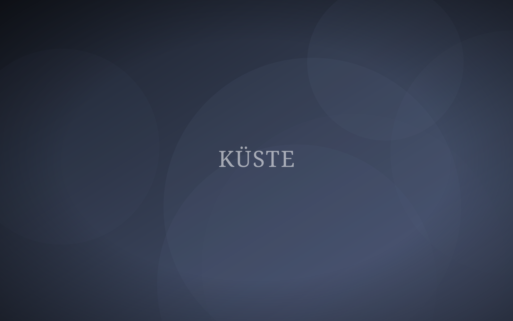
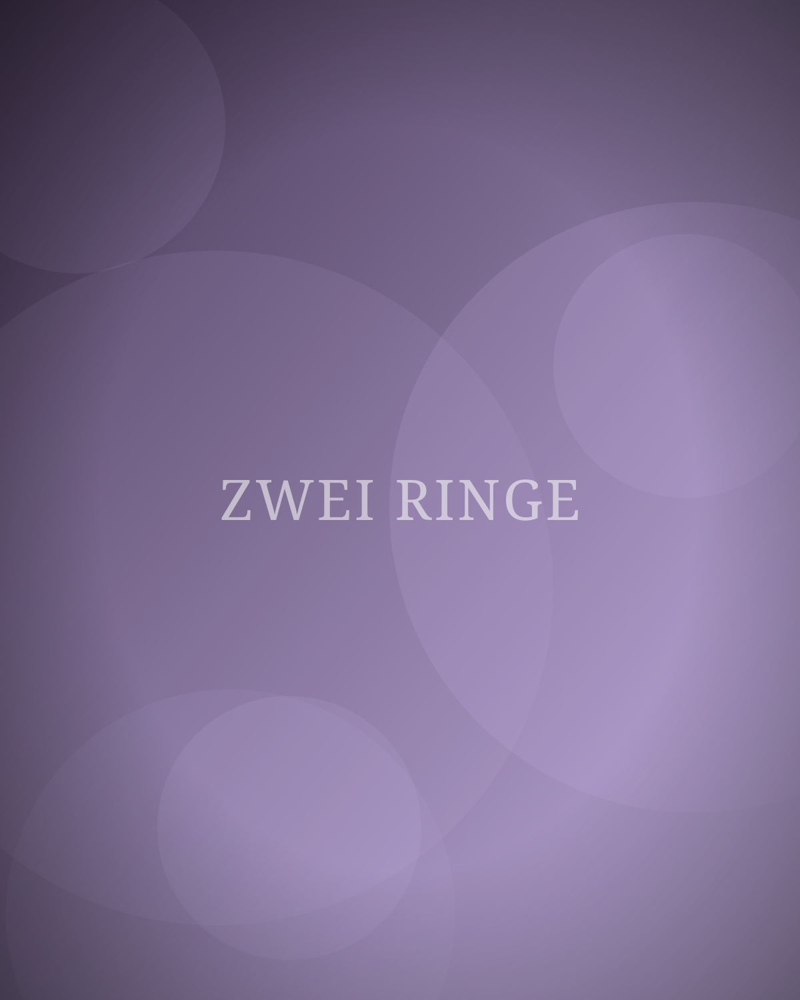
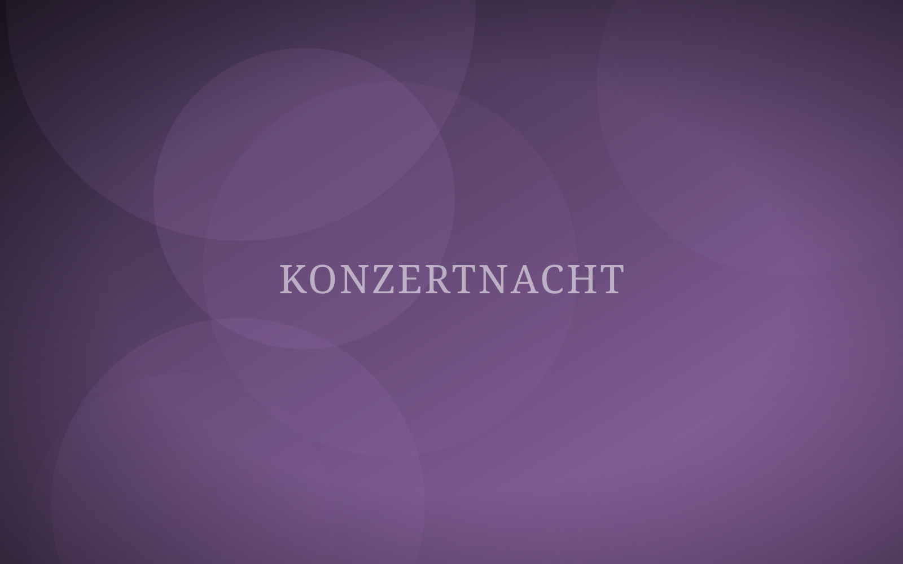
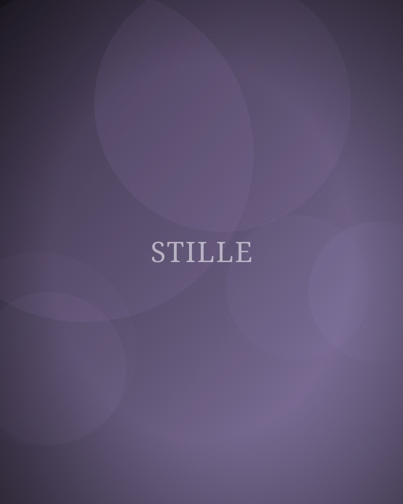
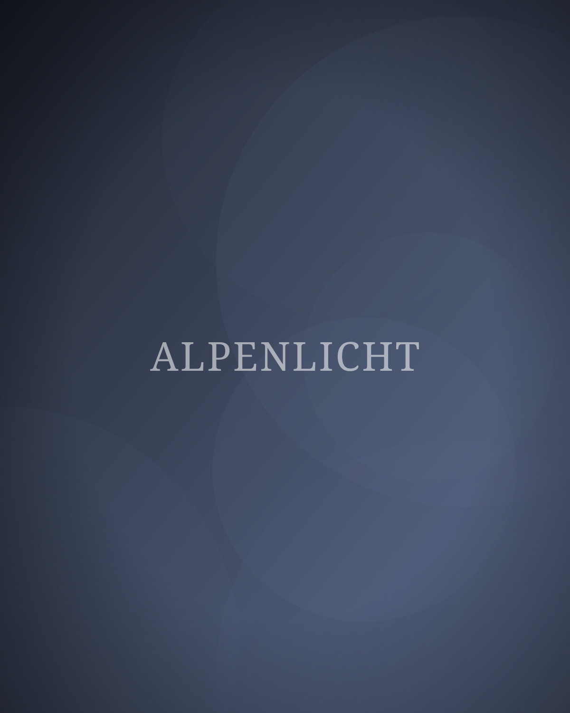
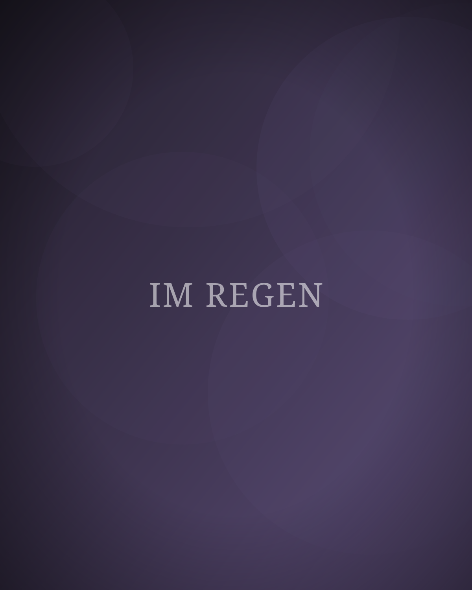
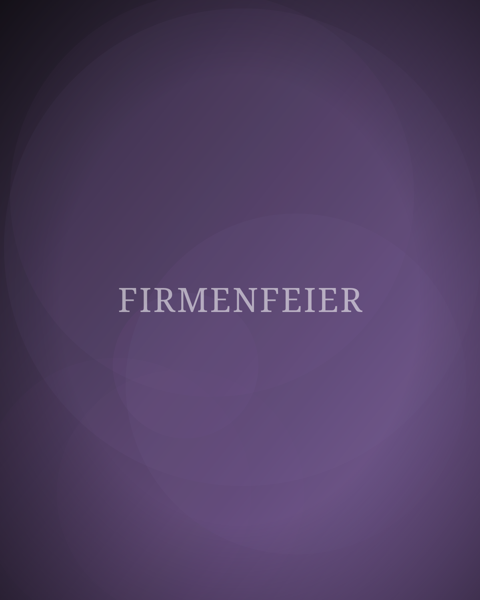
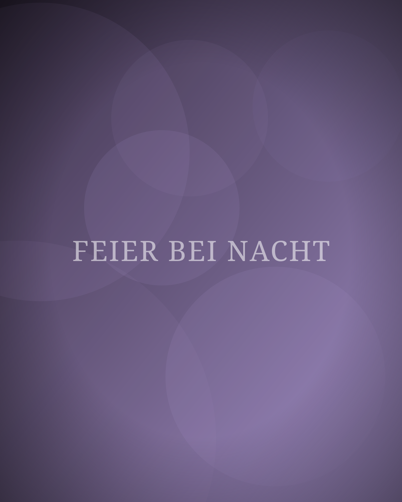
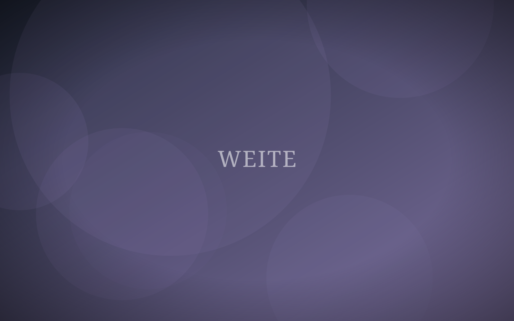
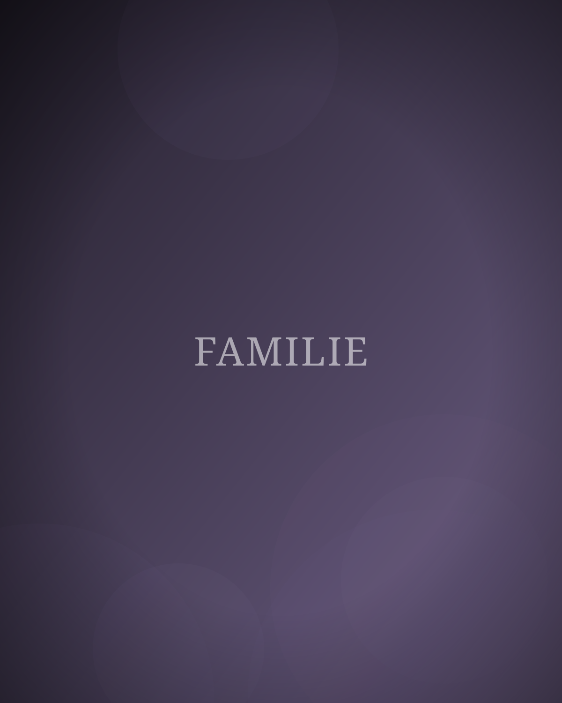
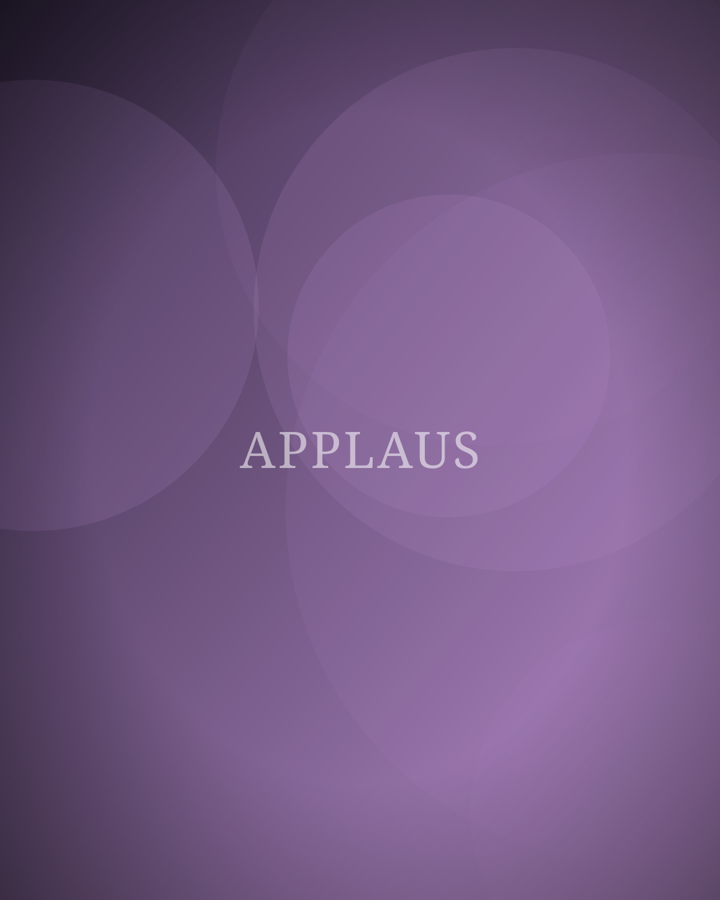

Anfrage
Gefällt dir, was du siehst?
Erzähl mir von deinem Projekt. Ich antworte in der Regel innerhalb von 48 Stunden.
Jetzt anfragen